BTNC · Bitencourt Studio é o estúdio de marketing de Gustavo Bitencourt, em São Paulo. Marca, redes sociais, sites e comunicação para negócios que já têm produto bom e precisam de quem prove isso.
01 O que o estúdio faz
Eu faço o desenho e a redação. O miolo da entrega não é terceirizado.
Calendário editorial, direção de arte, estáticos, carrosséis e reels dentro de um sistema visual, com agendamento.
Logo, paleta com contraste verificado, tipografia, grade e manual. O cliente sai com brandbook, não com um logo solto.
Site institucional, página de agendamento e loja online, pensados primeiro para o celular.
Roteiro de gravação, reels de antes e depois, stories de campanha e linguagem de motion para a marca.
Texto para investidor, para jornalista e para o feed. Apoio a assessoria, newsletter e conteúdo de executivos.
WhatsApp Business estruturado, mensagens automáticas de atendimento e campanhas de tráfego pago.
02 Posicionamento
A prova antes da peça.
Quase todo estúdio vende quantidade de post. Eu vendo o passo anterior: descobrir o que está travando a conversão, mostrar a evidência e só então produzir. Peça sem diagnóstico é decoração cara.
03 Grupo FLG
Respondo pelo marketing e pela comunicação do Grupo FLG, holding de real assets e capital com as marcas FLG Corp, FLG Realty, FLG Capital e FLG Sports. É onde opero marca institucional para três públicos ao mesmo tempo: investidor, imprensa e feed.
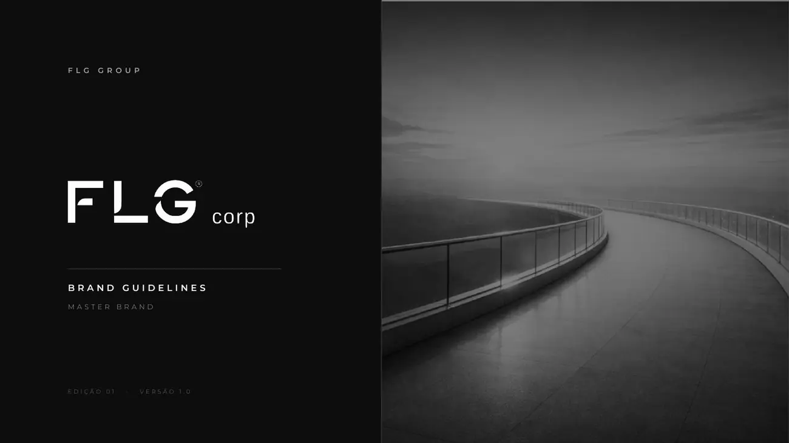
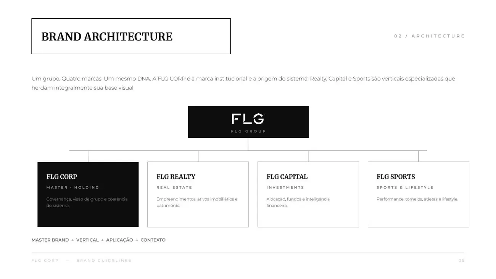
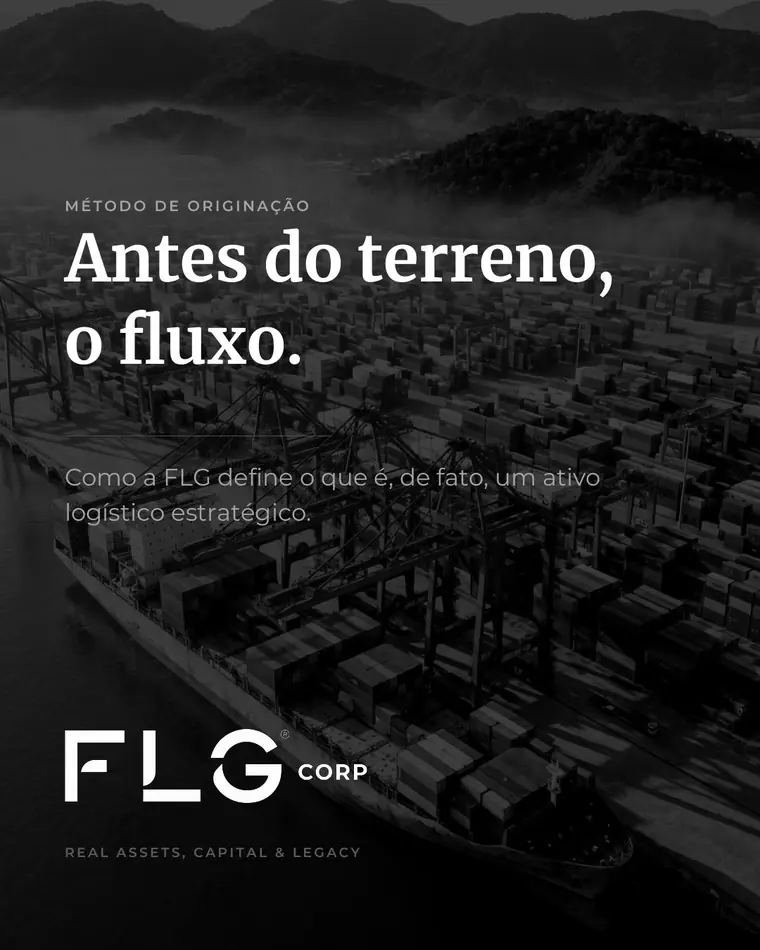
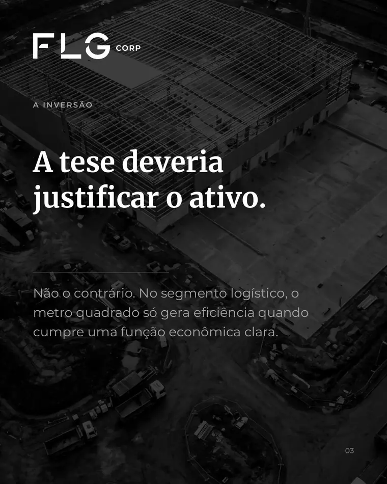
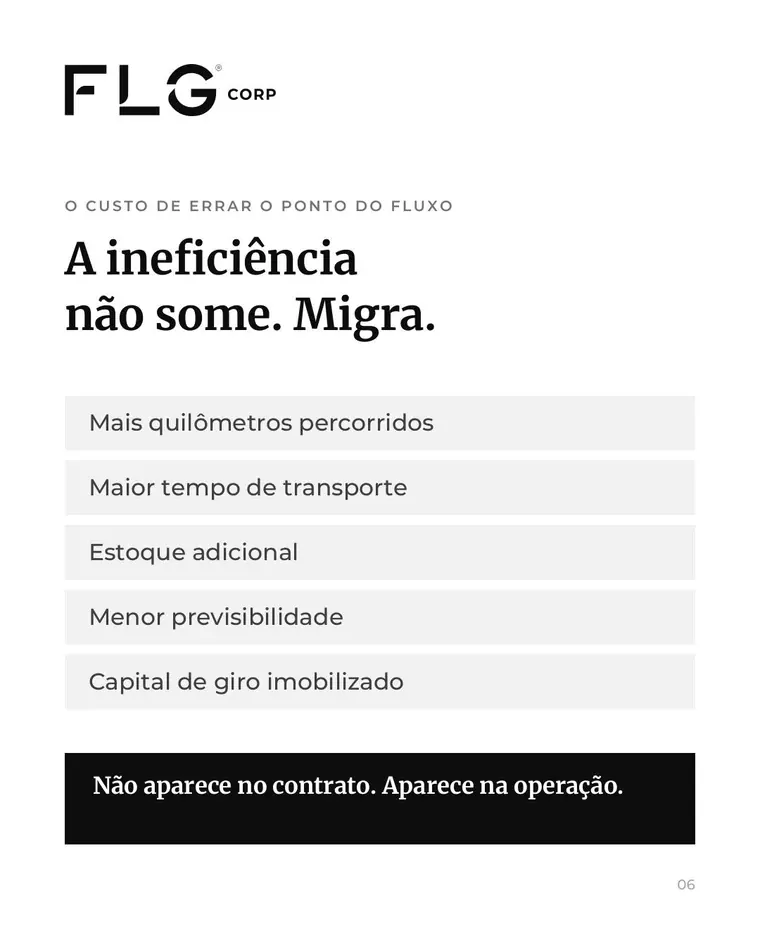
Brandbooks com paleta, tipografia, uso de logo e regras de aplicação para cada marca do grupo.
Cards e carrosséis de mercado para os perfis da FLG Corp, com copy diferente para cada plataforma.
Newsletter mensal institucional sobre mercado, real assets e logística, do texto ao envio.
Posts, artigos e carrosséis para os perfis dos executivos, dentro das restrições de um grupo com fundos listados.
Calendário, fluxo de aprovação e organização do acervo de marca, para a operação não depender de memória.
Auditoria dos canais do grupo e plano de ação por prioridade.
04 FLG Sports · Andrey Xavier
Construí a marca da vertical esportiva do grupo e cuido da comunicação do golfista Andrey Xavier, do Tour Profissional da CBGolfe: anúncio de torneio, resultado de cada rodada e o card do título.
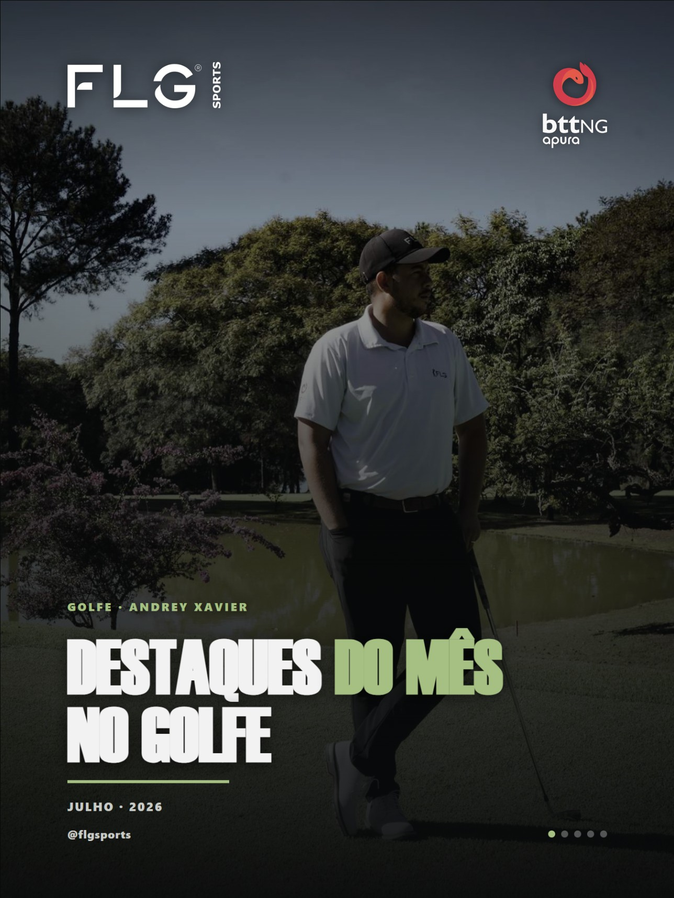
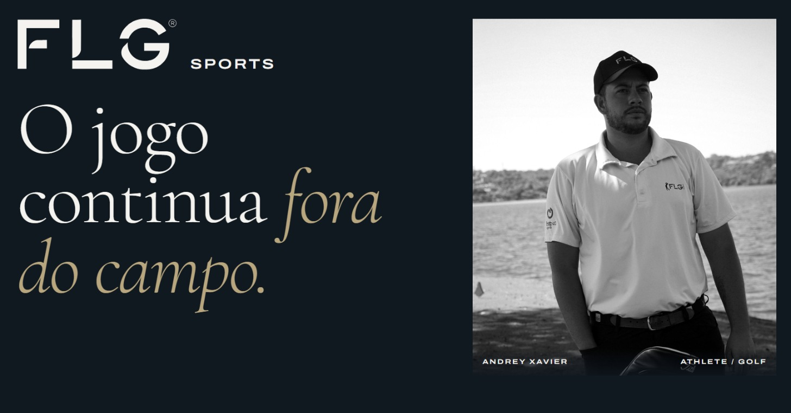
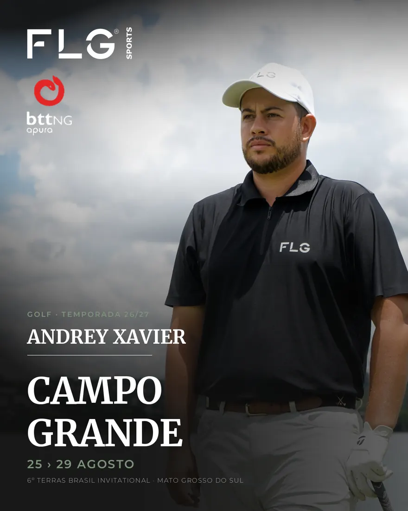
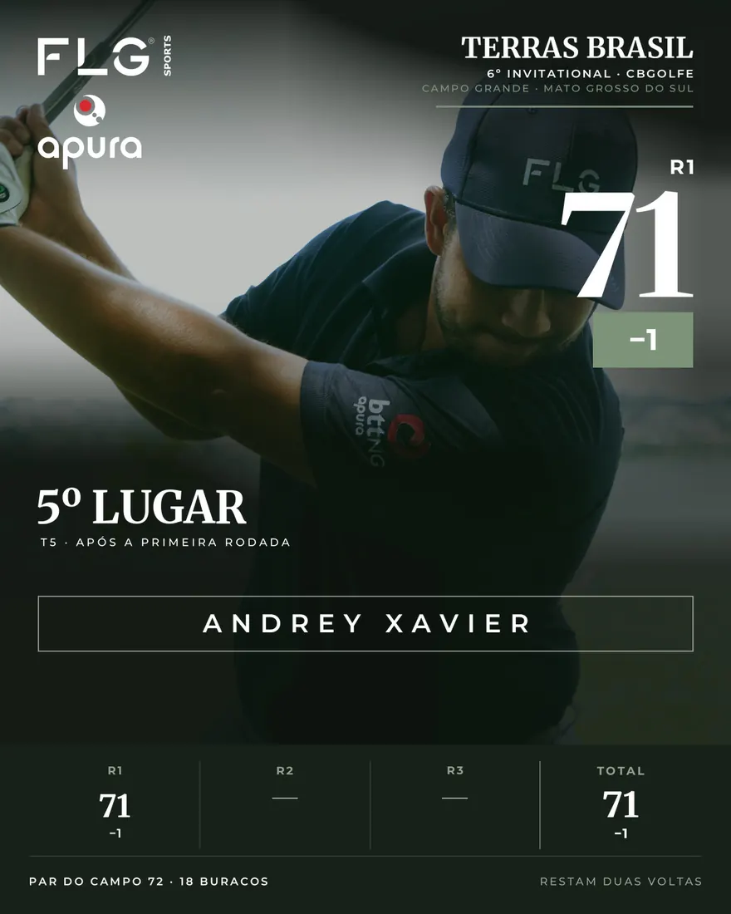
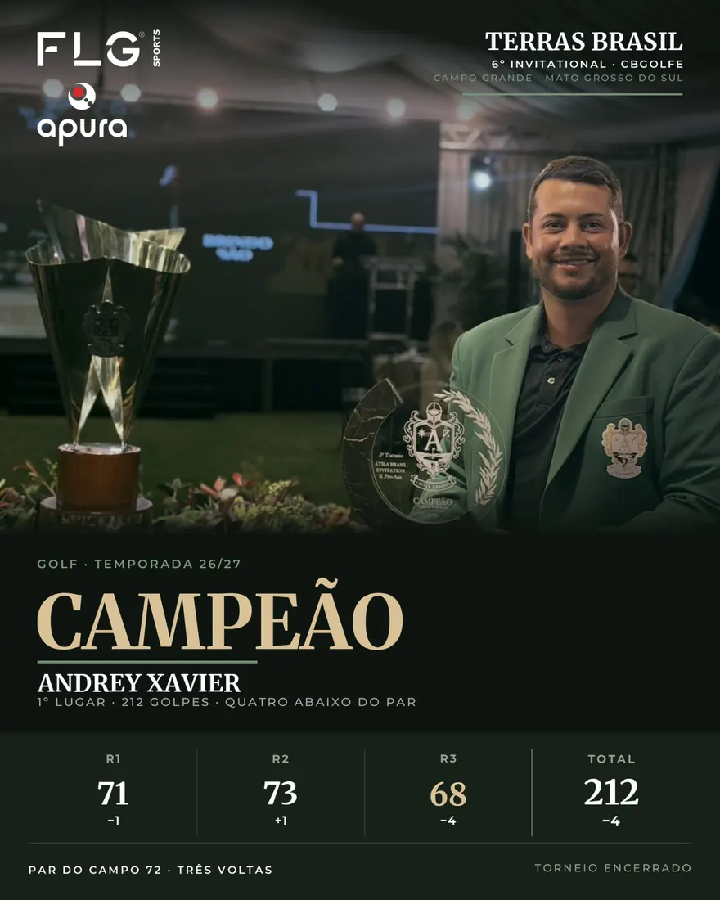
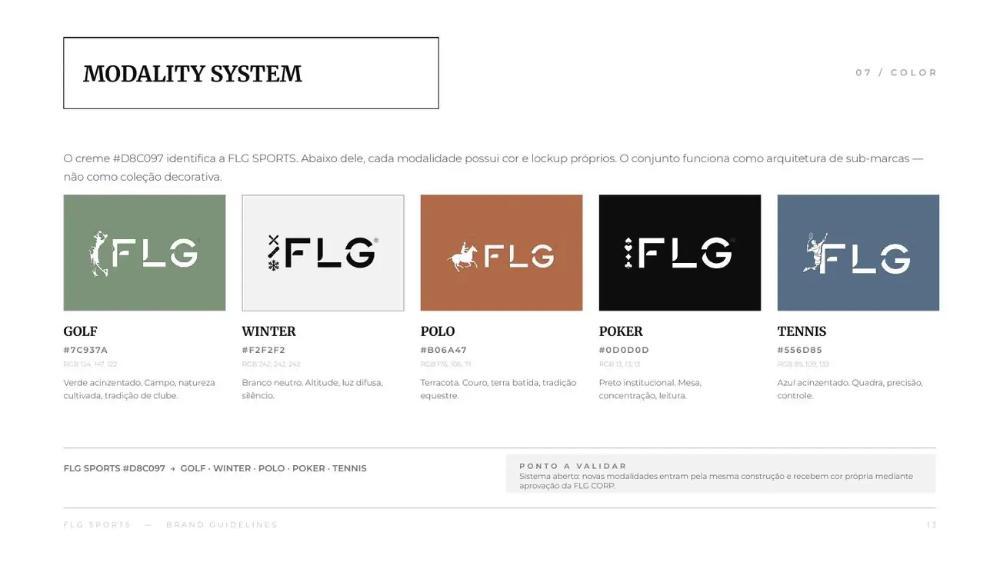
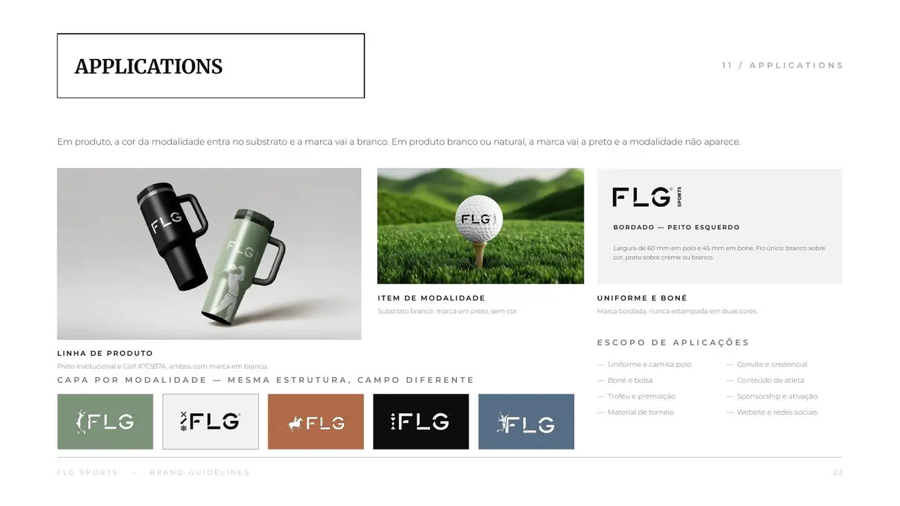
05 Imprensa
Meu papel é de bastidor. Participo do trabalho de comunicação que leva a FLG à imprensa: levantamento de dados, preparação das respostas dos porta-vozes e repercussão nos canais do grupo.
Não assino as reportagens e não sou porta-voz. Os textos são dos veículos e dos jornalistas.
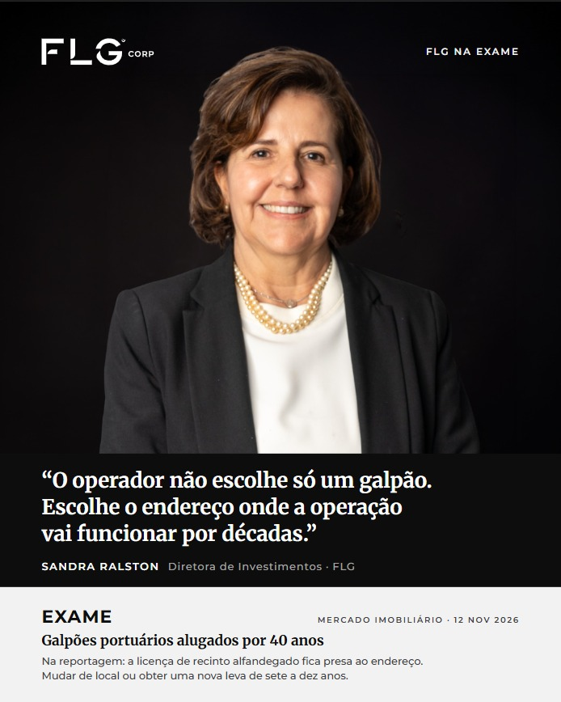
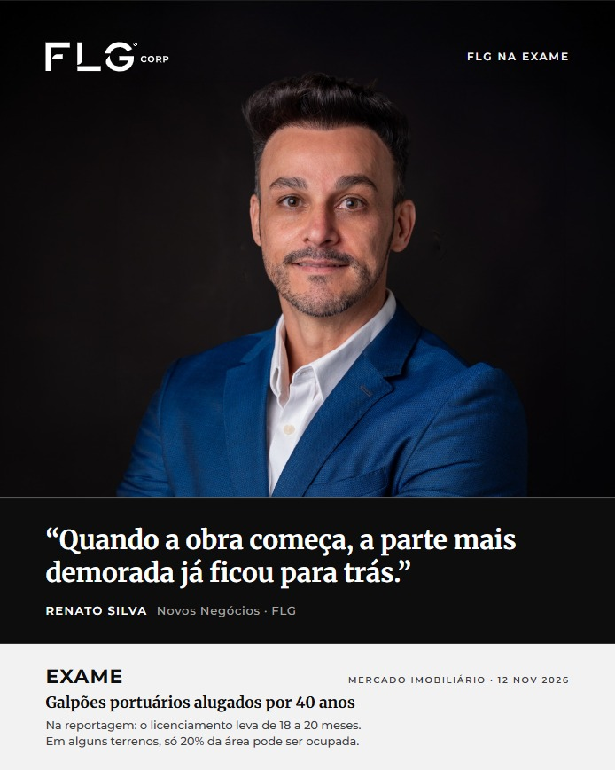
Reportagem sobre os projetos da FLG Corp no entorno do Porto Itapoá, em Santa Catarina.
Na repercussão, produzi os cards dos porta-vozes para o LinkedIn do grupo.
Ler na Exame06 Trabalhos do estúdio
Negócios locais e marcas em lançamento. Em cada um está descrito o que foi entregue, sem número que eu não possa comprovar.
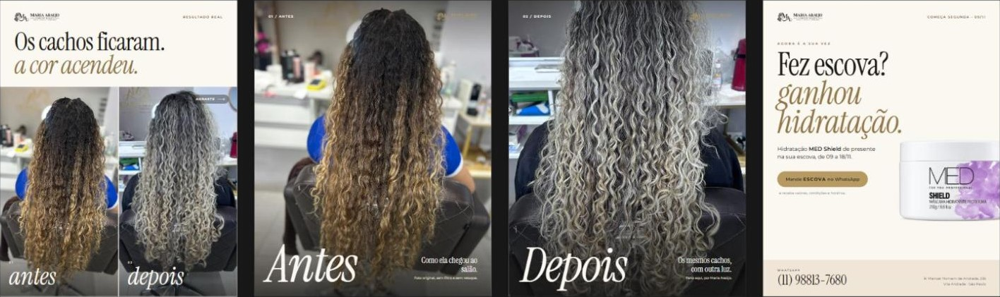
07 Como eu trabalho
Não prometo número. Prometo método e cadência, e escrevo onde o dado não existe.
Conversa de 30 minutos. Entender o negócio, o produto e de onde vêm os clientes hoje.
Diagnóstico por escrito. Cada afirmação marcada como fato, hipótese ou recomendação. Fica com o cliente mesmo se ele não fechar.
Proposta com escopo, prazo e limites. O que está incluído e o que não está, antes do primeiro mês.
Entrega em cadência. Calendário aprovado antes de virar arte e relatório mensal com leitura e recomendação.